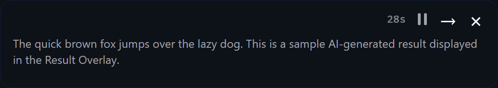

Result Pop-Up Window
Display AI results in a floating window near your cursor

Overview
The Result Pop-Up Window shows the output of an action in a small floating window. It appears near your cursor (or at a fixed screen position) and auto-dismisses after a configurable duration. This lets you see AI results without switching windows or interrupting your current work.
The window is non-focusable by design: it never steals keyboard focus from the application you are working in. You can continue typing immediately after a result appears. Token usage and response time are shown in the bottom-right corner when available.
Overlay Modes
Each action has an overlay mode setting that controls when the Result Pop-Up Window appears. This is configured per-action in Settings > Actions on each action card.
| Mode | Behavior |
|---|---|
| Off (default) | No pop-up window. Results are delivered by paste, copy, or clipboard as normal. |
| Always | Show the pop-up window on every execution, whether triggered from the panel or via hotkey. |
| Hotkey Only | Show the pop-up window only when the action is triggered by a keyboard hotkey or mouse trigger. Panel executions do not show the window. Useful when you run an action both from the panel (where you can already see results) and via hotkey in other applications. |
Position Options
You can choose where the pop-up window appears. Fixed corner positions use the primary monitor. Cursor mode uses the monitor that contains the mouse pointer at the time the action completes.
| Position | Description |
|---|---|
| Cursor (default) | Near the mouse cursor position. Placement is window-aware: if the foreground application is not maximized, the overlay is placed in free screen space beside or below that window. Falls back to cursor-offset placement with edge clamping when the foreground window is maximized or cannot be detected. |
| Upper Left | Top-left corner of the primary monitor, 20px from the edges. |
| Upper Right | Top-right corner of the primary monitor. |
| Lower Left | Bottom-left corner of the primary monitor. |
| Lower Right | Bottom-right corner of the primary monitor. |
Duration
The duration setting controls how long the pop-up stays visible before it auto-dismisses.
- Default: 20 seconds.
- Maximum: 999 seconds.
- Set to 0: The window stays open indefinitely until you close it manually.
While the auto-dismiss timer is active, a pause button appears in the top bar. Click it to cancel the timer and keep the window visible. The pause button is hidden when duration is set to 0, because there is no timer to pause.
The window also dismisses automatically when a new action starts executing, so a stale result is cleared before the next one arrives.
Press Escape to dismiss the overlay immediately at any time.
Appearance
The Result Pop-Up Window is a glass-effect floating window with the following characteristics:
- Background: Semi-transparent dark background (92% opacity) with a 12px border radius and a subtle white border.
- Text: White text, pre-wrap formatted, scrollable if the content exceeds the window height.
- Size: Estimated from text content. Min: 200×60 logical pixels. Max: 500×400 logical pixels (both before scaling). Long lines wrap and grow the window height rather than extending width past the maximum.
-
Non-focusable: Uses
WS_EX_NOACTIVATEso the window never takes keyboard focus from your active application. - Always on top: Stays above other windows until dismissed.
- Click to copy: Click anywhere on the result text to copy it to the clipboard. A brief "Copied" toast confirms the action.
- Drag to reposition: Click and drag the window body to move it freely. A 5px movement threshold distinguishes a drag from a click-to-copy.
-
Token usage: When available, the bottom-right corner shows prompt
tokens, completion tokens, total tokens, and response time (for example:
1.2s · 45+128=173 tok).
Configuration
Per-action settings are on each action card in Settings > Actions:
| Setting | Default | Description |
|---|---|---|
| Overlay Mode | Off | Three-segment toggle: Off / Always / Hotkey Only. |
| Position | Cursor | Dropdown: Cursor, Upper Left, Upper Right, Lower Left, Lower Right. |
| Duration (seconds) | 20 | How long the window stays visible before auto-dismissing. Set to 0 to disable auto-dismiss. Maximum: 999. |
| Result Overlay Scale | 1.4× | Zoom level of the pop-up window. Range: 1.0×–3.0×. Configured in Settings > General. Independent from the main panel UI scale and the Prompt Library overlay scale. |
PromptBar Overlay
The PromptBar also supports the Result Pop-Up Window for AI Paste results. Its overlay settings are configured separately in Settings > General under the PromptBar section:
- Overlay Mode: Off / Always / Hotkey Only.
- Position: Same five options as per-action settings.
- Duration: Configurable independently from per-action durations.
Related
- Actions — Configure overlay mode, position, and duration per action.
- Main Window — The PromptBar, which has its own overlay settings.
- Prompt Library — Execute prompts directly to the pop-up window from the library overlay.
- Settings — Adjust the Result Pop-Up Window scale in General settings.
- Keyboard Shortcuts — Press Escape to dismiss the overlay.